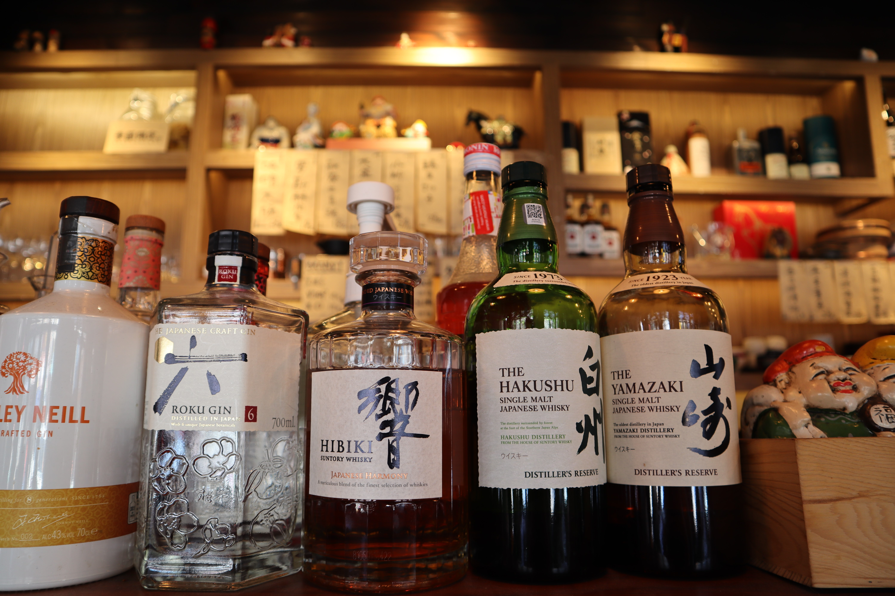

|  | ||||||
|
||||||
干饭人凑合着吃了些这那让我的肚子不再像随时可能爆裂的水管一样大叫之后，我回到寝室。下午还有课呢，先睡一觉吧。
￥@%ET@#^&*^#@%EAFFDAdsa!#%$&^%(*&&L:?>{}<>?|~出于一些原因，中午并没有睡着。下午的课就听起来像这个小标题一样，我偶尔怀念起我的
好像不是很饿虽然这样，但我还是走到了M记(又称金拱门)。人生苦短，我们带来了什么，又带走了什么，也许现在并没有这三个券到底哪个最省钱重要，吃点晚餐先。 |
||||||
| 本网站由zgb制作，如有雷同请联系删改。 |